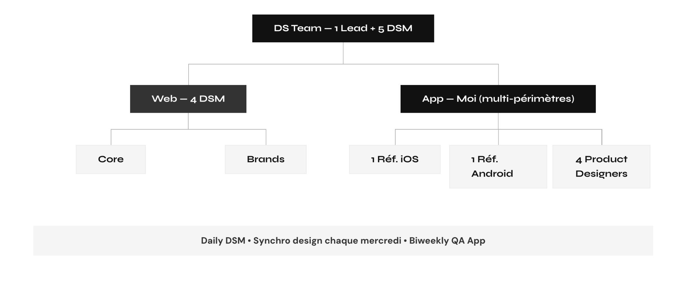
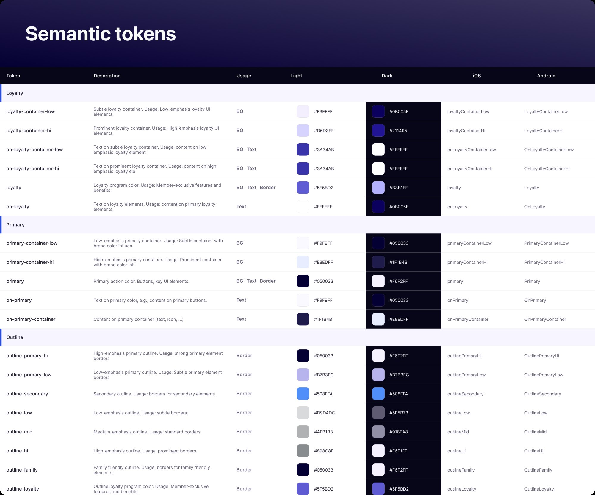
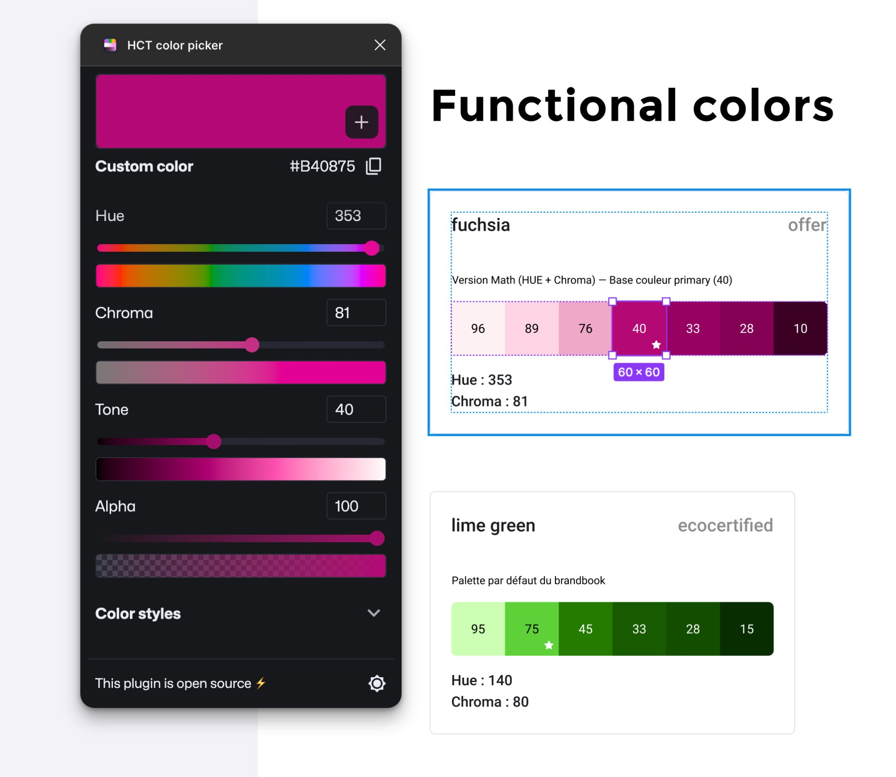
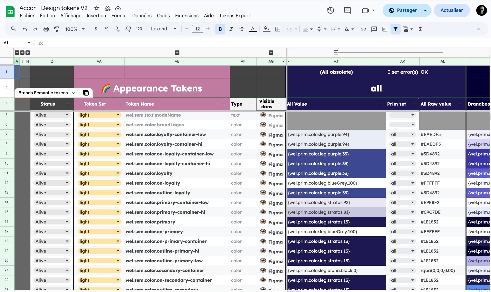
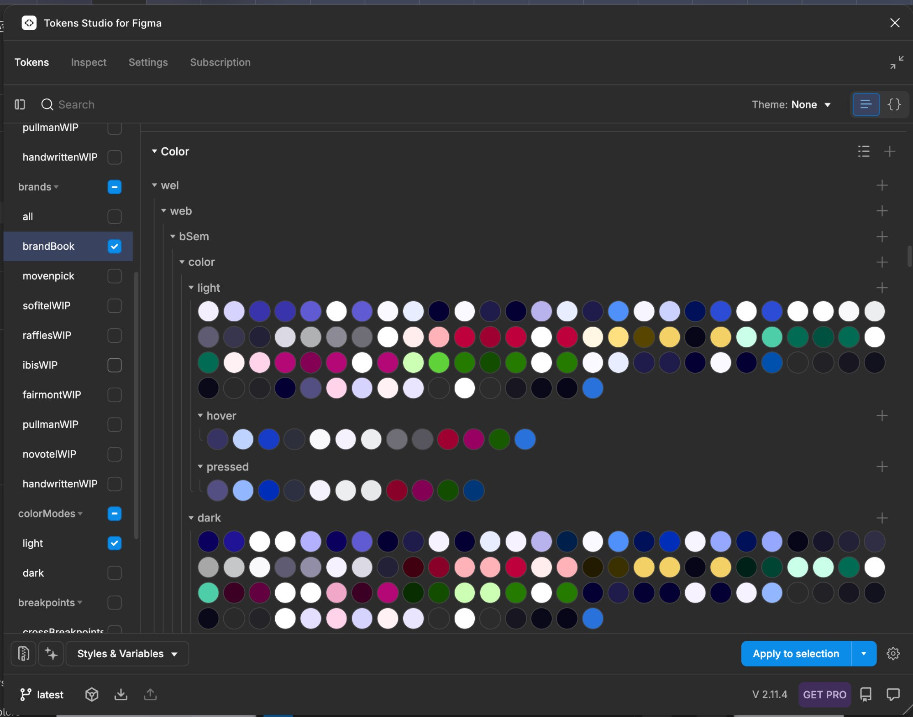
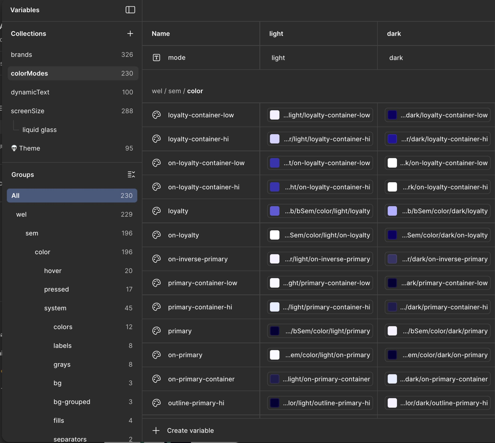
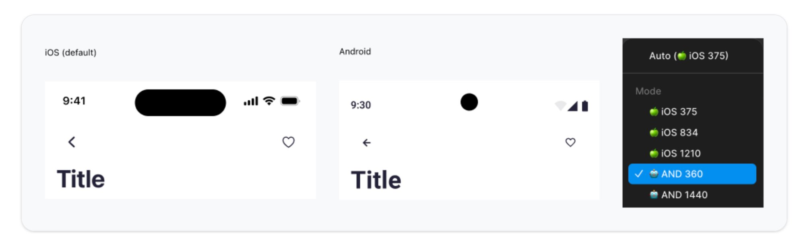
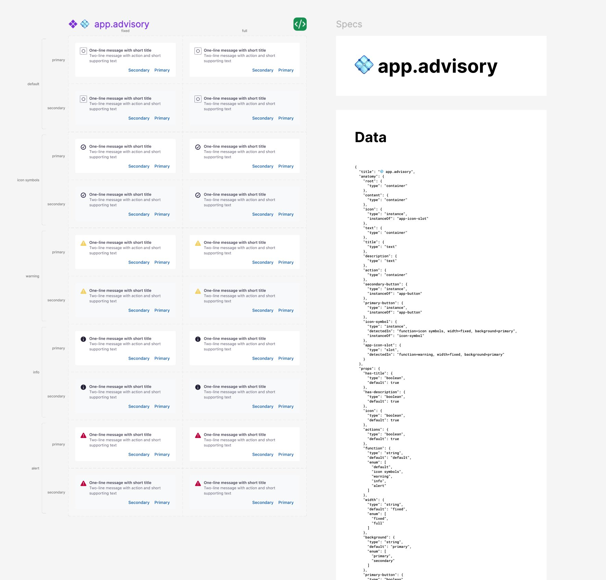

Le constat.
À mon arrivée, le DS mobile d'Accor existait. Il était solide. Mais il n'était pas pensé pour grandir.
Le système gérait déjà les changements light et dark, ainsi que les variations iOS et Android via les variables. Le travail n'était pas de tout reconstruire. Il s'agissait de poser une architecture scalable, capable de tenir le choc des futures marques, et de l'aligner avec le DS web avec qui on partageait la même direction artistique sans jamais partager la même source de vérité.

Couleurs désynchronisées
Web et app partageaient la DA mais pas les valeurs. Aucune source de vérité commune sur les couleurs des marques.
Naming inconsistant
Les semantic tokens existaient mais leur nomenclature n'était pas rationalisée. Chaque ajout creusait la dette.
Familles incomplètes
Pas de familles structurées. Difficile de décliner une marque proprement, encore plus d'en ajouter une nouvelle.
Documentation à la traîne
Les composants évoluaient plus vite que leur doc. Les designers cherchaient les réponses dans les fichiers Figma, pas dans une référence.
Le vrai défi, c'était humain
Au-delà du technique, la complexité était humaine. Les designers n'étaient pas à l'aise avec les tokens sémantiques. surface-container, on-surface-variant, ce vocabulaire abstrait était loin de leurs habitudes de travail.
"Surface-container, ça veut rien dire pour moi. Je veux juste mon gris."Un designer, premier atelier tokens
Ce jour-là, j'ai compris que la bataille technique serait la plus facile. La transformation ne pouvait pas être imposée. Elle devait être progressive, prouvée par la valeur, et embarquante par la pédagogie.
L'opportunité.
On aurait pu lancer la refonte tokens dès le départ. On ne l'a pas fait.
Imposer un changement d'architecture sans raison business visible, c'était garantir l'échec. Quand le rebranding a été annoncé, on a saisi la fenêtre. « Puisqu'on doit toucher à toutes les couleurs de toute façon, autant en profiter pour reconstruire les fondations. »
Le rebranding est devenu le cheval de Troie de la refonte structurelle. Il nous a permis de légitimer le chantier auprès du leadership, d'aligner web et app sur un calendrier commun, et de justifier l'investissement en outillage et en gouvernance.
Un système qui suivait
- Couleurs différentes web et app
- Naming sémantique inconsistant
- Pas de familles structurées
- Doc à la traîne sur les composants
- Aucune source de vérité partagée
Un système qui pilote
- Source de vérité unifiée web et app
- Naming sémantique rationalisé et documenté
- Familles de couleurs Material-style complètes
- Documentation industrialisée
- Pipeline automatisée vers Figma et code
Important : on n'a pas réinventé le langage. Le système existant suivait déjà une logique Material. Notre travail a été de rationaliser le naming, de compléter les familles de couleurs, et de documenter. Un vrai changement d'architecture, mais pas une révolution sémantique. C'est cette continuité qui a facilité l'adoption.
La refonte.
Trois décisions structurantes, défendues avant d'être exécutées.
Rationaliser l'architecture en quatre niveaux
Le naming sémantique n'était pas cohérent. Les familles de couleurs étaient incomplètes. Ajouter une marque demandait de bricoler à plusieurs niveaux.
Une architecture stricte, organisée en Core, Brand, Semantic et Component, pour découpler ce qui change rarement de ce qui change souvent. Chaque niveau ne connaît que celui du dessus. On a gardé la logique Material existante et on l'a rendue propre.
Pas pour révolutionner. Pour que le système devienne prévisible, et donc maintenable, transmissible, et capable d'accueillir de nouvelles marques sans casser l'existant.
Centraliser la gouvernance sur Google Sheet
Pousser directement dans Tokens Studio coupait designers et devs de la décision. Personne ne voyait l'historique, personne ne validait avant le push.
Faire de Google Sheet la base de données du DS. Lisible par tous, mappée web vers iOS vers Android, validable collaborativement, avant push vers Tokens Studio puis vers Git.
La gouvernance avant l'automatisation. Automatiser un système mal structuré ne fait qu'accélérer le chaos. Le low-tech a gagné parce qu'il était lisible par tout le monde, designers comme développeurs.
Industrialiser la pipeline avec Tokens Studio & Git
Le copier-coller de valeurs entre Figma et le code était la principale source de dérive entre design et implémentation.
Tokens Studio configuré avec push Git pour l'export, et pull côté Figma pour la sync. Le repo Git est partagé directement avec les développeurs iOS et Android pour qu'ils consomment la source de vérité sans intermédiaire.
Style Dictionary a été expérimenté en POC pour pousser plus loin l'export natif. On l'a volontairement gardé en POC : on automatise ce qui est déjà robuste manuellement.

HCT comme grammaire des primitives
Pour ajouter une couleur, on utilise l'espace HCT. On verrouille la couleur de base, par exemple red-53, et si on veut décliner cette palette, on garde le Hue et la Chroma, on ne fait varier que le Tone. Une discipline simple qui garantit que toutes les déclinaisons d'une couleur appartiennent vraiment à la même famille, perceptuellement, pas juste mathématiquement.

La gouvernance, la pipeline, la sync
Trois outils, une seule source de vérité. Chaque outil a son rôle, et l'enchaînement est conçu pour qu'aucun copier-coller ne soit nécessaire entre eux.



Un theming à cinq dimensions
Une fois les tokens en place, on a conçu des composants qui s'adaptent automatiquement à cinq variables : OS, device, apparence, accessibilité, marque. Un seul composant. Cinq dimensions. Zéro duplication.

L'adoption.
Construire le système, c'était 30% du travail. Le faire adopter, c'était les 70% restants.
Plutôt que d'imposer les nouveaux tokens par décret, on a mis en place un dispositif en trois volets : former, donner à manipuler, et accompagner au quotidien. Trois leviers complémentaires, parce qu'aucun ne suffit seul.
Une formation pour penser en tokens
Sessions structurées pour expliquer la logique des familles de couleurs, la différence entre surface et on-surface, comment appliquer les tokens dans Figma. L'objectif n'était pas de mémoriser une nomenclature, mais de comprendre pourquoi elle existait. Une fois qu'on a compris le pourquoi, le quoi devient évident.
Un widget pour jouer avec les tokens
Plutôt que de la doc statique, j'ai construit un widget interactif où chaque designer peut explorer les familles, changer une variable et voir l'impact en temps réel sur l'interface. L'objectif : que chaque designer puisse répondre seul à la question « quel token utiliser ici ? » sans avoir à demander.
Voir le widget en ligneUn accompagnement individuel et continu
Reviews dans les maquettes, daily DSM, synchros design hebdomadaires, biweekly QA. Pas pour surveiller. Pour aider, débloquer, et capter les frictions du système avant qu'elles ne deviennent des blocages. C'est dans ces moments d'accompagnement individuel qu'on apprend ce que la doc ne dira jamais.
L'adoption a vraiment décollé le jour où les designers ont compris qu'ils gagnaient du temps sur leurs livrables. Pas avant.Observation terrain
Documenter à grande échelle
Documenter manuellement des dizaines de composants, c'est plusieurs mois de travail qui se périme à mesure qu'on l'écrit. On a construit une approche différente, en s'appuyant sur l'export JSON de chaque composant via Anova : anatomy, props, slots, types, variants. Ce JSON devient la spec lisible par la machine, qui peut ensuite alimenter à la fois la documentation publiée sur Supernova et les agents qui aident à générer les fiches.
L'idée n'est pas de remplacer la documentation humaine, mais de lui donner une base structurée et toujours à jour. La règle qu'on s'est fixée : la machine prépare, on valide. Jamais l'inverse.

app.advisory et son export JSON via Anova. À gauche, toutes les variantes visuelles (default, icon symbols, warning, info, alert · primary & secondary · fixed & full). À droite, le JSON structuré qui décrit l'anatomie, les slots, les props et les enums. Une spec qui sert à la fois à la doc et à l'outillage.
En parallèle, une pipeline de changelog automatisé est en cours d'industrialisation pour notifier l'équipe à chaque évolution du DS. Une partie du travail est déjà en place, le reste fait partie de ce qui sera continué après mon départ.
Le résultat.
Le DS mobile est passé d'un système solide mais fragmenté à une architecture alignée avec le web, et pensée pour grandir.
Cohérence
Une source de vérité unique pour les couleurs entre web et mobile.
Scalabilité
Une architecture en quatre niveaux prête à accueillir de nouvelles marques.
Vélocité
Un changement de thème en quelques minutes au lieu de plusieurs jours.
Pipeline
Sheet, Tokens Studio, Git, Figma et code, sans copier-coller entre les étapes.
Autonomie
Designers autonomes sur les tokens grâce à la formation, au widget et au suivi.
Documentation
Doc structurée à partir des JSON Anova, publiée sur Supernova.
Ce que cette mission m'a appris.
Un DS se vend autant qu'il se construit
L'adoption passe par la preuve de valeur, pas par le mandat. Le meilleur système au monde reste lettre morte s'il n'est pas désiré par ceux qui doivent l'utiliser.
Gouvernance avant automatisation
Automatiser un système mal structuré ne fait qu'accélérer le chaos. On stabilise manuellement, on documente, puis seulement on automatise.
Un DS Manager est un PM déguisé
J'ai passé plus de temps à convaincre, former et négocier qu'à designer. Et c'est exactement comme ça que ça doit être.
Construisons quelque chose de propre.
Si vous structurez un design system à l'échelle et que ce parcours résonne avec vos enjeux, parlons-en.